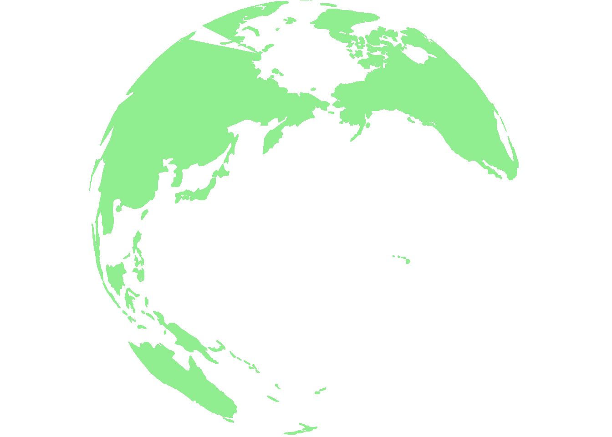

Chapter 4 Spinning globe
world <- ne_countries() %>%
fortify() ## Regions defined for each Polygonsworld %>% head()## long lat order hole piece id group
## 1 61.21082 35.65007 1 FALSE 1 0 0.1
## 2 62.23065 35.27066 2 FALSE 1 0 0.1
## 3 62.98466 35.40404 3 FALSE 1 0 0.1
## 4 63.19354 35.85717 4 FALSE 1 0 0.1
## 5 63.98290 36.00796 5 FALSE 1 0 0.1
## 6 64.54648 36.31207 6 FALSE 1 0 0.14.1 Flat globe
world %>% ggplot() +
aes(x = long, y = lat, group = group, colour = "#90ee90", fill = "#90ee90") +
geom_polygon() +
scale_colour_identity() +
scale_fill_identity()4.2 Round globe
world %>% ggplot() +
aes(x = long, y = lat, group = group, colour = "#90ee90", fill = "#90ee90") +
geom_polygon() +
scale_colour_identity() +
scale_fill_identity() +
coord_map("ortho", orientation=c(35, 175, 0)) +
theme_void()
4.3 Spinning globe
angles = as.list(seq(1, 360, 1))
makeplot <- function(){
lapply(angles,
function(x){
p <- world %>% ggplot() +
aes(x = long, y = lat, group = group, colour = "#90ee90", fill = "#90ee90") +
geom_polygon() +
scale_colour_identity() +
scale_fill_identity() +
coord_map("ortho", orientation=c(0, x, 0)) +
theme_void()
print(p)
})}
makeplot() %>% save_gif(gif_file = "Spinning_globe.gif")## [1] "C:\\Users\\jacek\\OneDrive\\Documents\\rForFun\\Spinning_globe.gif"#,
# width = 720,
# height = 480,
# delay = .1)4.4 Keep it
You can add parts to organize one or more book chapters together. Parts can be inserted at the top of an .Rmd file, before the first-level chapter heading in that same file.
Add a numbered part: # (PART) Act one {-} (followed by # A chapter)
Add an unnumbered part: # (PART\*) Act one {-} (followed by # A chapter)
Add an appendix as a special kind of un-numbered part: # (APPENDIX) Other stuff {-} (followed by # A chapter). Chapters in an appendix are prepended with letters instead of numbers.
4.5 Test
#world <- ne_countries(returnclass = "sf")
#world %>% ggplot() +
# geom_sf() +
# coord_map("ortho", orientation=c(35, 175, 0))
#world %>% ggplot() +
# aes(x = long, y = lat, group = group, colour = "#90ee90", fill = "#90ee90") +
# geom_polygon() +
# scale_colour_identity() +
# scale_fill_identity() +
# coord_map("ortho", orientation=c(35, 175, 0)) +
# theme_void()